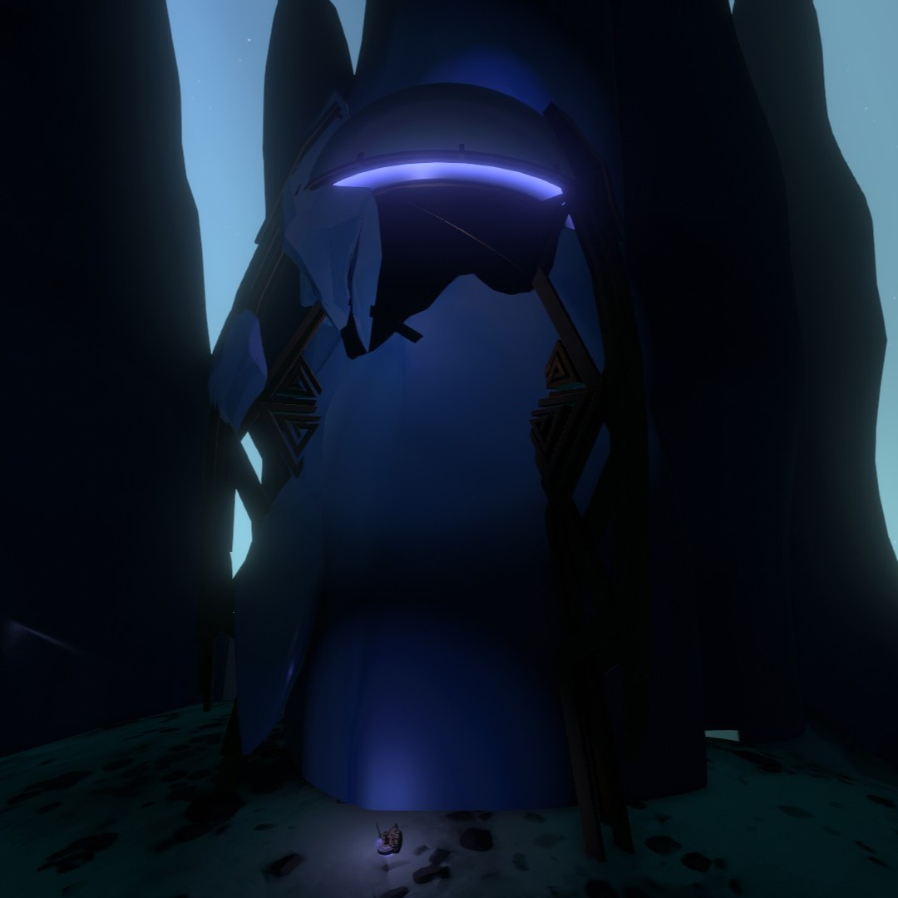
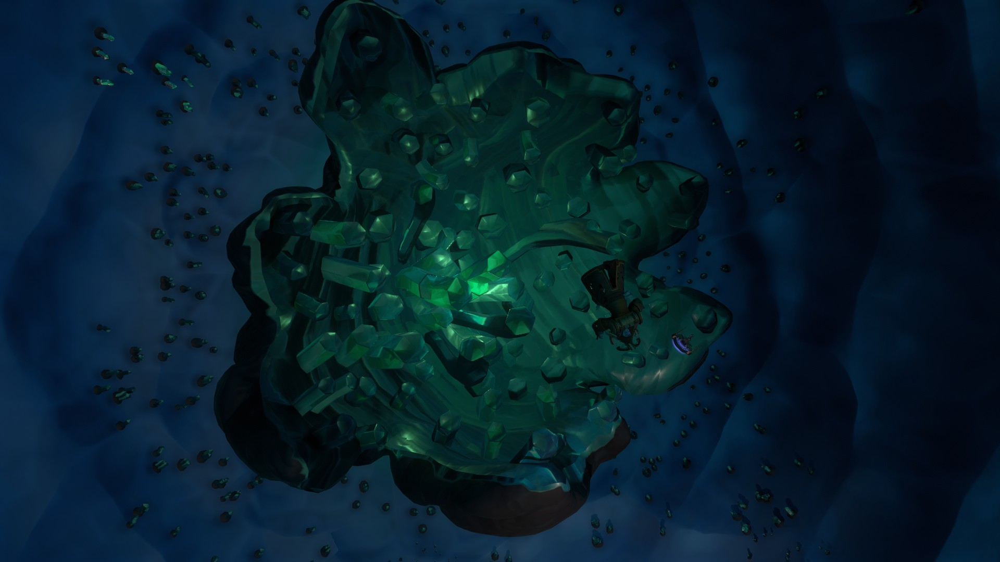

NATURAL PHENOMENA
As the Interloper moves closer to the sun, the ice on its surface will melt, revealing tunnels beneath the cracks leading to the comet's core. Many of the tunnels are covered with ghost matter, making finding the correct path to the core tricky.
PLACES OF INTEREST
Frozen Nomai Shuttle

A Nomai shuttle encased in ice located on the dark side of the Interloper. It's entrance is blocked by the ice and can only be accessed by calling the shuttle at Ember Twin's gravity cannon. Inside the shuttle is a Nomai log written by Clary, where she expresses her worry with her situation. She explains that she, Pye, and Poke landed on the Interloper not long after it's arrival in the solar system and picked up a strange reading coming from beneath the surface. Pye and Poke left the shuttle to investigate the source of the reading, but have not made contact with Clary, who remained on the shuttle to follow protocol, in a long time. A Nomai skeleton most likely belonging to Clary can be found inside the shuttle.
Ruptured Core

This ruptured core lies inside the very center of the Interloper. While the Nomai were still alive, this core was a spherical stone casing under extreme pressure filled with ghost matter. When the casing ruptured, the ghost matter inside rapidly expanded, completely blanketing the solar system almost instantly. The spread of ghost matter is what lead to the extinction of the Nomai in this solar system. Two Nomai corpses, belonging to Poke and Pye can be found near the core. Poke and Pye had planned to warn the rest of the Nomai about the core, but it had ruptured before they could make it off of the comet.